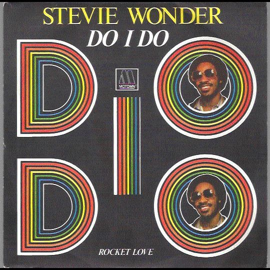

Do I Do; passion for the music

All a waste of
energy, vitality, rhythm and passion for music. Fusing rhythms of funk, jazz or rap, was one of four unusual gifts featuring Stevie Wonder and
Original Musiquarium compilation I. His more than 10 minutes duration in the album version,
"
Do I Do" was all a cherry with Stevie Wonder closed and opened another stage in his long career full of creativity and success.
A musical ecstasy that few artists can be able to generate your audience. The masterful presence of a trumpet solo
Dizzy Gillespie,
Nathan LaMar Watts on bass, the freshness of the melody, the sound disc characteristic of the late 70's and early 80's even today sounding great, or simply the
wonderful vocal performance by Stevie.
Embraced by the genius of Stevie Wonder,
his magic remains indelible despite this new millennium is imposing new rhythms and sounds. Do I Do is held high and proud, gallant and Herculean despite the passage of time, because when a song has been created with natural energy, it flows without harshness and effort getting an unforgettable climax, able to endure the storms and storm surges over time, needing only a ears who want to feel and enjoy with the
magical sap Stevie provides us with his music.

When I see you on the street
My whole body gets weak
When you're standing in a crowd
Your love talks to me so loud
Girl, do I do, what you do, when I do my love to you
When I hear you on the phone
Your sweet, sexy voice turns my ear all the way on
Just the mention of your name
Seems to drive my head insane
Girl, do I do, what you do, when I do my love to you...baby
Yes I got some candy kisses for your lips
Yes I got some honey suckle chocolate dripping kisses full of love for you
Yes I got some candy kisses for your lips
Yes I got some honey suckle chocolate dripping kisses full of love for you
My life has been waiting for your love
My arms have been waiting for your love to arrive
My heart has been waiting
My soul anticipating your love, love, love
From the time that I awake
I'm imagining the good love that we'll make
If to me your vibe can do all this
Just imagine how it's going to feel when we hug and kiss
Sugar, do I do, what you do, when I do my love to you...all right
Yes I got some candy kisses for your lips
Yes I got some honey suckle chocolate dripping kisses full of love for you
Yes I got some candy kisses for your lips
Yes I got some honey suckle chocolate dripping kisses full of love for you
My life has been waiting for your love
My arms have been waiting for your love to arrive
My heart has been waiting
My soul anticipating your love, your love, your love
Ladies and gentlemen,
I have the pleasure to present on my album
Mr. Dizzy Gillespie...Blow!
Blow, blow, blow, blow, blow, blow!
Do I do, what you do, when I do my love to you
Yes I got some candy kisses for your lips
Yes I got some honey suckle chocolate dripping kisses full of love for you
Yes I got some candy kisses for your lips
Yes I got some honey suckle chocolate dripping kisses full of love for you
My life has been waiting for your love
My arms have been waiting for your love to arrive
My heart has been waiting
My soul anticipating your love, your love, your lo-o-ove
Oh, I don't care how long it might take
'Cause I know the woman for me, you I'll make
And I will not deny myself the chance
Of being part of what feels like the right romance
Girl, do I do, what you do, when I do my love to you, oh yeah
Yes I got some candy kisses for your lips
Yes I got some honey suckle chocolate dripping kisses full of love for you
Yes I got some candy kisses for your lips
Yes I got some honey suckle chocolate dripping kisses full of love for you
Yes I got some candy kisses for your lips
Yes I got some honey suckle chocolate dripping kisses full of love for you
Yes I got some candy kisses for your lips
Yes I got some honey suckle chocolate dripping kisses full of love for you
Yes I got some candy kisses for your lips
Yes I got some honey suckle chocolate dripping kisses full of love for you
Girl, I've got some chocolate kisses for your lovin'; baby, oh yea
Do you want some candy?
Do you want some honey suckle?
Do you want some chocolate dripping kisses full of love for you?
Girl, if you felt everything you heard me say
Turn your feelings in your heart back to me right away
And I'll get it
Do I do (do I do)
What you do (what you do)
When I do my love to you
Do I do (do I do)
What you do (what you do)
When I do my love to you
Do I do (do I do)
What you do (what you do)
When I do my love to you
Do I do (do I do)
What you do (what you do)
When I do my love...Nate!
I know the record is about to end
But we're just going to play and play until it goes away
So if you don't like the groove you can turn the record off
It won't cost you nothin' but a penny and you'll have a cough'
I know I cannot ryhme 'cause I ain't like a friend of mine
but I hai ha ha ha....
(jive rap)
Now everybody's talking about the jive is in...
Well I know I've got something for your body...
Earl...Earl
Earl playing by himself, man...
Earl playing by himself, man...
Earl playing by himself, man...
Dennis playing by himself, man...
five, four, three, two, one.